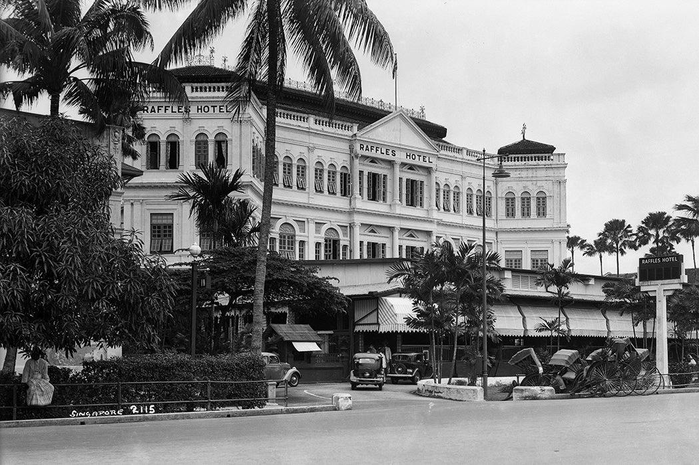
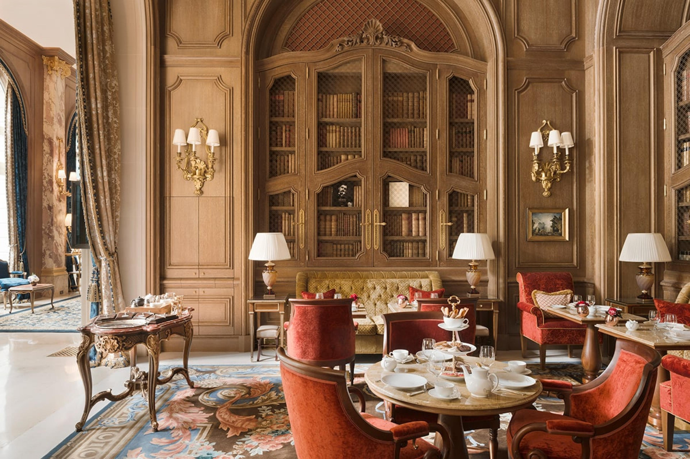
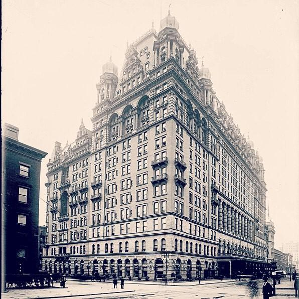
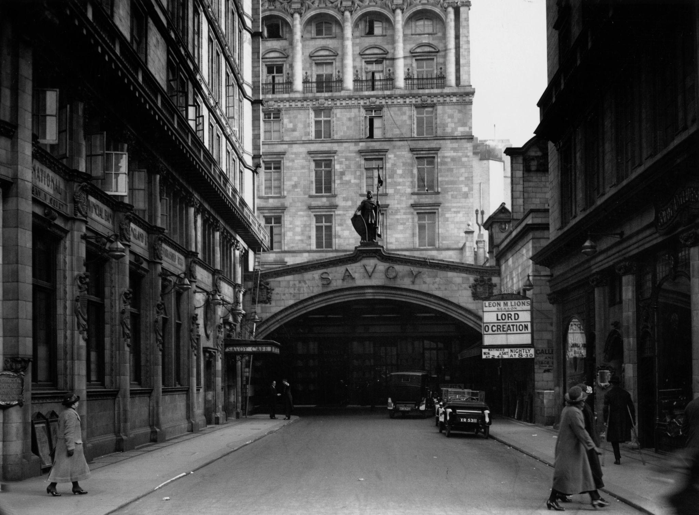
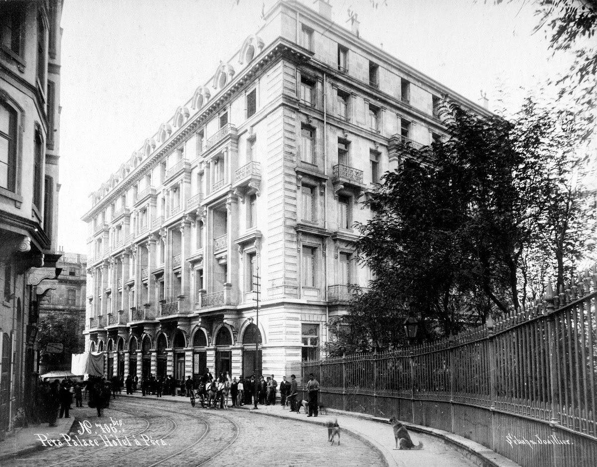

Every Great Hotel Has a Story
Beyond elegant rooms and beautiful architecture, legendary hotels have witnessed moments that shaped our world. They have welcomed writers searching for inspiration, leaders making important decisions, and travelers whose journeys became part of history.
Kings Hotel explores these remarkable places not simply as destinations, but as living chapters of human history. Each story reveals the people, events, and traditions that transformed ordinary buildings into unforgettable landmarks.
Legendary Hotels
Raffles Hotel Singapore

The Hotel Where the World Met
When Raffles Hotel opened its doors in 1887, Singapore was a rapidly growing trading port connecting East and West. What began as a small seaside hotel eventually became one of the world's most famous symbols of hospitality.
Over the decades, writers, explorers, politicians, and travelers passed through its doors. The hotel's elegant verandas and colonial architecture created a unique atmosphere where different cultures met.
The hotel is also famous as the birthplace of the Singapore Sling, a cocktail that became a symbol of the city itself.
Raffles Hotel survived one of the darkest periods in Singapore's history during World War II and later underwent careful restoration, preserving the spirit of a bygone era.
The Ritz Paris

Where Luxury Became an Art
Opened in 1898, The Ritz Paris quickly became one of the world's most celebrated hotels. Its founder, César Ritz, believed that luxury was not only about comfort, but about elegance, personal attention, and beauty.
The hotel became closely connected with artists, writers, and cultural figures. Coco Chanel lived at the Ritz for many years, and Ernest Hemingway became forever associated with the hotel's famous bar.
For more than a century, The Ritz Paris has represented the timeless relationship between hospitality and French culture.
Waldorf Astoria New York

The Address of Power and Influence
Since opening in 1931, the Waldorf Astoria New York has been one of America's most recognizable hotels.
Its grand spaces hosted presidents, diplomats, entertainers, and business leaders. For decades, important conversations took place behind its doors, making the hotel a symbol of New York influence and ambition.
The Waldorf Astoria represents more than luxury. It represents an era when hotels served as meeting places for people who shaped society.
The Savoy London

The Hotel That Changed Hospitality Forever
Opened in 1889, The Savoy introduced a new idea of luxury hospitality to London. It combined elegant surroundings, modern technology, and exceptional service.
The hotel attracted royalty, musicians, writers, and international visitors. Its famous American Bar became one of the world's most respected cocktail destinations.
The Savoy helped define what people around the world came to expect from a truly remarkable hotel.
Pera Palace Istanbul

The Hotel Between Two Worlds
Opened in 1895, Pera Palace was built to welcome passengers arriving on the legendary Orient Express. Located in Istanbul, it stood at the meeting point of Europe and Asia.
The hotel welcomed diplomats, writers, and travelers during a period when Istanbul was one of the world's most fascinating crossroads.
Agatha Christie, Ernest Hemingway, and many other famous figures were connected with its history.